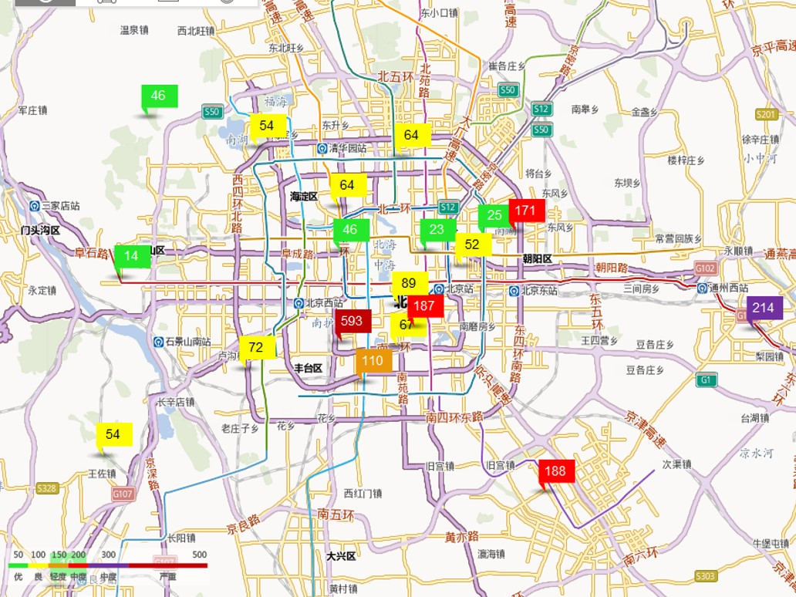

Selected Publications
- Hsun-Ping Hsieh, Bao-Hong Lai, Yu-Wen Chen, Yu-En Chang. "Multi-Performance Estimation for Deploying Bank Branches Based on a Multi-task Attentive Tree-enhanced Model." IEEE Transactions on Emerging Topics in Computational Intelligence (IEEE- TETCI), 2022.
- Fandel Lin, Hsun-Ping Hsieh. "Exploiting Network Structure in Multi-Criteria Distributed and Competitive Stationary-Resource Searching." ACM Transactions on Spatial Algorithms and Systems (TSAS), 2022 .
- Fandel Lin, Hsun-Ping Hsieh. "Traveling Transporter Problem: Arranging New Circular Route in Public Transportation System Based on Heterogeneous Non-Monotonic Urban Data." ACM Transactions on Intelligent Systems and Technology (TIST), 2022.
- Hsun-Ping Hsieh, Ding-You Wu, Kuo-Chuan Hung, Sher-Wei Lim, Sher-Wei Lim, Yang Fan-Chiang, Ching-Chung Ko*. "Machine Learning for Prediction of Recurrence in Parasagittal and Parafalcine Meningiomas: Combined Clinical and MRI Texture Features." Journal of Personalized Medicine, 2022.
- Hsun-Ping Hsieh, Fandel Lin. "A Decision Framework to Recommend Cruising Locations for Taxi Drivers under the Constraint of Booking Information." ACM Transactions on Management Information Systems (TMIS), 2022.
- Yan-Jen Chen, Hsun-Ping Hsieh, Kuo-Chuan Hung, Yun-Ju Shih, Sher-Wei Lim, Yu-Ting Kuo, Jeon-Hor Chen, Ching-Chung Ko. "Deep Learning for Prediction of Progression and Recurrence in Nonfunctioning Pituitary Macroadenomas: Combination of Clinical and MRI Features." Frontiers in Oncology, 2022.
- Fandel Lin, Hsun-Ping Hsieh. "A Grid-Based Two-Stage Parallel Matching Framework for Bi-Objective Euclidean Traveling Salesman Problem." ACM Transactions on Spatial Algorithms and Systems (TSAS), 2022.
- Hsun-Ping Hsieh, Su Wu,Ching-Chung Ko, Chris Shei, Zheng-Ting Yao and Yu-Wen Chen. "Forecasting Fine-Grained Air Quality for Locations without Monitoring Stations Based on a Hybrid Predictor with Spatial-Temporal Attention Based Network." Applied Sciences, 2022.
- Chen-Lin Wu, Hsun-Ping Hsieh, Jiawei Jiang, Yi-Chieh Yang, Chris Shei, Yu-Wen Chen. "MUFFLE: Multi-modal Fake News Influence Estimator on Twitter." Applied Sciences, 2022.
- Fandel Lin, Hsun-Ping Hsieh. "Multi-Criteria Route Planning for In-Operation Mass Transit under Urban Data." Applied Sciences, 2022.
- Fandel Lin, Hsun-Ping Hsieh. "A Joint Passenger Flow Inference and Path Recommender System for Deploying New Routes and Stations of Mass Transit Transportation." ACM Transactions on Knowledge Discovery from Data (TKDD), 2021.
- I-Ying Wu, Fandel Lin, Hsun-Ping Hsieh. " Highway Accident Delay Time Prediction Using Deep Learning." ACM SIGSPATIAL International Conference on Advances in Geographic Information Systems (SIGSPATIAL'21).
- Fandel Lin, Hsun-Ping Hsieh. "Conntrans: A Two-Stage Concentric Annealing Approach for Multi-Criteria Distributed Competitive Stationary Resource Searching." ACM SIGSPATIAL International Conference on Advances in Geographic Information Systems (SIGSPATIAL'21). (Best Paper Candidate)
- Yu-En Chang, Hsun-Ping Hsieh. "An Interpretable Deep Learning Framework for Assessing Financial Potential of Urban Spaces." ACM SIGSPATIAL International Conference on Advances in Geographic Information Systems (SIGSPATIAL'21).(Best Paper Winner of ACM Student Research Competition)
- Hsun-Ping Hsieh, Fandel Lin, Jiawei Jiang, Tzu-Ying Kuo, Yu-En Chang. "Inferring Long-Term Demand of Newly Established Stations for Expansion Areas in Bike Sharing System." Applied Sciences, 2021.
- Hsun-Ping Hsieh, Jiawei Jiang, Tzu-Hsin Yang, Renfen Hu, Cheng-Lin Wu. "Predicting the Success of Mediation Requests Using Case Properties and Textual Information for Reducing the Burden on the Court." ACM Digital Government: Research and Practice (DGOV), 2021. (to appear)
- Bao-Hong Lai, Hsun-Ping Hsieh. "Object Detection on Embedded Systems for Traffic in Asian Countries." ACM International Conference on Multimedia Retrieval (ICMR’21), 2021. (to appear)
- Hsun-Ping Hsieh, Fandel Lin. "AI Governance: Advanced Urban Computing on Informatics Forecasting and Route Planning." The 26th International Conference on Database Systems for Advanced Applications(DSAFAA'21), 2021. (tutorial paper)
- Hsun-Ping Hsieh, Fandel Lin. "Recommending taxi routes- a multi-criteria route planner." International Journal of Urban Sciences, 2021. (to appear)
- JiaWei Jiang, Yu-Chen Chen, Hsun-Ping Hsieh. "Detection of Illegal Parking Events Using Spatial-Temporal Features." ACM SIGSPATIAL International Conference on Advances in Geographic Information Systems(SIGSPATIAL'20), 2020. (short paper)
- Fandel Lin, Hsun-Ping Hsieh. "A Goal-Prioritized Algorithm for Additional Route Deployment on Existing Mass Transportation System." The 20th IEEE International Conference on Data Mining (ICDM 2020), 2020. (top conference of data mining, acceptance rate = 19%)
- Jie-Yu Fang, Fandel Lin, Hsun-Ping Hsieh. "A Multi-Criteria System for Recommending Taxi Routes with an Advance Reservation." The European Conference on Machine Learning and Principles and Practice of Knowledge Discovery in Databases” (ECML-PKDD'2020), 2020. (top conference, acceptance rate = 19%).
- Fandel Lin, Hsun-Ping Hsieh, Jie-Yu Fang. "A Route-Affecting Region Based Approach for Feature Extraction in Transportation Route Planning." The European Conference on Machine Learning and Principles and Practice of Knowledge Discovery in Databases” (ECML-PKDD'2020), 2020. (top conference, acceptance rate = 19%).
- Fandel Lin, Hsun-Ping Hsieh. "Customizing Your Own Route with QQIP. A Quantitative and Qualitative Itinerary Planner for New Transportation Routes." ACM The Web Conference (WWW'2020), 2020. (top conference demo paper, acceptance rate ≈ 17%)
- Fandel Lin, Hsun-Ping Hsieh. "A Convolutional Approach for Estimating Popularity of New Branch Stores." ACM The Web Conference (WWW'2020), 2020. (top conference poster paper)
- Fandel Lin, Shiuan-Tyng Lin, Jie-Yu Fang, Hsun-Ping Hsieh. "Traffic Light Control with Real-Time Vehicle License Plate Recognition." ACM The Web Conference (WWW'2020), 2020. (top conference poster paper)
- Hsun-Ping Hsieh, Fandel Lin, Cheng-Te Li, Ian En-Hsu Yen, Hsin-Yu Chen. "Temporal Popularity Prediction of Locations for Geographical Placement of Retail Stores." Journal of Knowledge and Information Systems(KAIS), 2019.
- Hsun-Ping Hsieh, Cheng-Te Li. "Inferring Online Social Ties from Offline Geographical Activities." ACM Transactions on Intelligent Systems and Technology (TIST), 2019.
- Fandel Lin, Hsun-Ping Hsieh. "An Intelligent and Interactive Route Planning Maker for Deploying New Transportation Services." ACM SIGSPATIAL International Conference on Advances in Geographic Information Systems(SIGSPATIAL'2018), 2018.
- Ren-Hao Chen, Hsun-Ping Hsieh Min Tan.A Graph-based Analytic Approach to Model the Correlations between Air Quality and City Dynamics. The 11th IEEE International Conference on Ubi-Media Computing, 2018. (Ubi-Media' 18)
- Po-Hao Chen, Ren-Hao Chen, Li-Yuan Wang, Hsun-Ping Hsieh. Filling Missing Values of Smart Meters Based on A Joint Collaborative Filtering and Support Vector Regression Framework. The 11th IEEE International Conference on Ubi-Media Computing, 2018. (Ubi-Media' 18)
- Cheng-Te Li, Hsin-Yu Chen, Ren-Hao Chen, Hsun-Ping Hsieh. On Route Planning by Inferring Visiting Time, Modeling User Preferences, and Mining Representative Trip Patterns. Knowledge and Information Systems(KAIS), 2017. (accepted, SCI, IF=2.004)
- Rui Yan, Cheng-Te Li, Hsun-Ping Hsieh, Po Hu, Xiaohua Hu, and Tingting He. Inferring Bi-directional Influence Probabilities for Socialized Language Model Smoothing in Social Media. ACM International Conference on World Wide Web (WWW'16), Montreal, Canada, 2016. (accepted, accepting rate = 16%)
- Hsun-Ping Hsieh and Cheng-Te Li. Will I Win Your Favor? Predicting the Success of Altruistic Requests. The 20th Pacific-Asia Conference on Knowledge Discovery and Data Mining (PAKDD'16), Auckland, New Zealand, 2016. (accepted, accepting rate = 13%)
- Cheng-Te Li and Hsun-Ping Hsieh. Geo-Social Media Analytics. The 20th Pacific-Asia Conference on Knowledge Discovery and Data Mining (PAKDD'16), Auckland, New Zealand, 2016. (tutorial)
- Hsun-Ping Hsieh, and Cheng-Te Li. Dissecting Urban Noises from Heterogeneous Geo-Social Media and Sensor Data. ACM International Conference on Multimedia (MM'15), Brisbane, Australia, 2015.
- Hsun-Ping Hsieh, Rui Yan and Cheng-Te Li. Where You Go Reveals Who You Know: Analyzing Social Ties from Millions of Footprints. ACM International Conference on Knowledge and Information Management (CIKM'15), Melbourne, Australia, 2015.
- Hsun-Ping Hsieh, Shou-De Lin and Yu Zheng. Inferring Air Quality for Station Location Recommendation Based on Urban Big Data. ACM SIGKDD International Conference on Knowledge Discovery and Data Mining (KDD'15). Sydney, Australian, 2015.
- Hsun-Ping Hsieh, Cheng-Te Li and Rui Yan. I See You: Person-of-Interest Search in Social Networks. ACM International Conference on Research and Development in Information Retrieval (SIGIR'15). Santiago, Chile, 2015.
- Hsun-Ping Hsieh, Cheng-Te Li and Shou-De Lin. Estimating Potential Customers Anywhere and Anytime on Location-based Social Networks. The 30th European Conference on Machine Learning and Principles and Practice of Knowledge Discovery in Databases (ECML/PKDD'15). Porto, Portugal, 2015.
- Hsun-Ping Hsieh, Cheng-Te Li and Xiaoqing Gao. T-gram: a Time-aware Language Model to Predict Human Mobility. AAAI International Conference on Web and Social Media (ICWSM'15), Oxford, UK, May.26-29, 2015. (accepted)
- Tzu-Chi Yen, Tzu-Yun Lin, Ching-Yuan Yeh, Hsun-Ping Hsieh, and Cheng-Te Li. An Interactive Visualization System to Analyze and Predict Urban Construction Dynamics. ACM SIGKDD International Workshop on Urban Computing (UrbComp'15), in conjunction with KDD 2015, Sydney, Australia, 2015.
- Cheng-Te Li, and Hsun-Ping Hsieh. Geo-Social Media Analytics. ACM International World Wide Web Conference (WWW'15), Florence, Italy, May.18-22, 2015 (tutorial presentation)
- Hsun-Ping Hsieh and Cheng-Te Li. Mining and Planning Time-aware Routes Using Location Check-in Data. ACM International Conference on Knowledge and Information Management (CIKM'14), Shanghai, China, 2014.
- Hsun-Ping Hsieh, Cheng-Te Li, and Shou-De Lin. "Measuring and Recommending Time-Sensitive Routes from Location-based Data." ACM Transactions on Intelligent Systems and Technology (TIST), 2014.
Awarded by IJCAI 2015 Journal Track.
- Hsun-Ping Hsieh, and Cheng-Te Li. “Inferring Visiting Time Distributions of Locations from Incomplete Check-in Data.” ACM International World-Wide Web Conference (WWW'14), Seoul, Korea, 2014.(poster paper)
- Hsun-Ping Hsieh, and Cheng-Te Li. “Inferring Social Relationships from Mobile Sensor Data.” ACM International World-Wide Web Conference (WWW'14), Seoul, Korea, 2014 .(poster paper)
- Cheng-Te Li, and Hsun-Ping Hsieh. MobiCrowd: Simulating Crowds with Periodic and Social Mobility. 13th International Conference on Autonomous Agents and Multiagent Systems (AAMAS'14). Paris, France, 2014.(demo)
- Hsun-Ping Hsieh and Cheng-Te Li. Mining Time-aware Transit Patterns for Route Recommendation in Big Check-in Data. International Workshop on Pattern Mining and Application of Big Data (BigPMA). (in conjunction with PAKDD 2014), Tainan, Taiwan, 2014.
Best Paper Award.
- Hsun-Ping Hsieh, Thomas Sandholm and Cheng-Te Li. Route Planning and Visualization Using Geo-Social Media Data. The 8TH International AAAI Conference on Weblogs and Social Media(ICWSM'14). Ann Arbor,MI 2014.(tutorial)
- Hsun-Ping Hsieh, and Shou-De Lin. "On air quality inference with big urban data." Asia-Oceania Top University League on Engineering(AOTULE) Conference, 2014.
- Hsun-Ping Hsieh and Cheng-Te Li. Planning Routes and Locations in Geo-Social Media. IEEE/ACM International Conference on Advances in Social Network Analysis and Mining (ASONAM'14), Beijing, China, Aug.17-20, 2014. (tutorial)
- Hsun-Ping Hsieh, Cheng-Te Li and Shou-De Lin. “Time-Sensitive Route Planning Using Location-based Data.” IEEE International Conference on Data Mining (ICDM'13). Dallas, Texas, USA, Dec.7-10, 2013. (Ph.D. Forum full paper).
- Yu Zheng, Furui Liu, and Hsun-Ping Hsieh. “U-Air: When Urban Air Quality Inference Meets Big Data.” ACM SIGKDD conference on Knowledge Discovery and Data Mining(KDD'13). Chicago, USA, 2013. (acceptance rate=17%) [Link]

- Hsun-Ping Hsieh and Cheng-Te Li. “Constructing Routes with User Preference from Location Check-in Data.” ACM International Joint Conference on Pervasive and Ubiquitous Computing (UbiComp 2013). Zurich, Switzerland, 2013.
- Cheng-Te Li, Hsun-Ping Hsieh, Tsung-Ting Kuo, and Shou-De Lin. Opinion Diffusion and Analysis on Social Networks. Encyclopedia of Social Network Analysis and Mining (ESNAM), 2013.
- Chris Shei, and Hsun-Ping Hsieh. “Linkit: a CALL system for learning Chinese characters, words, and phrases”. Computer Assisted Language Learning (CALL) 2012, Volume 25, Issue 4, 2012.
- Hsun-Ping Hsieh, Cheng-Te Li, and Shou-De Lin. “Exploiting Large-Scale Check-in Data to Recommend Time-Sensitive Routes.” ACM SIGKDD International Workshop on Urban Computing (UrbComp'12). Beijing, China, 2012. (acceptance rate=20%)
- Cheng-Te Li, Hsun-Ping Hsieh, and Shou-De Lin. “CrowDiffuse: Information Diffusion over Crowds with Social Network.” ACM International Conference on Computer Graphics and Interactive Techniques (SIGGRAPH'12). Los Angeles, California, USA, 2012.(poster paper)
- Hsun-Ping Hsieh, and Cheng-Te Li. “Composing Traveling Paths from Location-Based Services.” AAAI International Conference on Weblogs and Social Media (ICWSM'12), Dublin, Ireland, 2012.
Student Travel Award.
- Hsun-Ping Hsieh, Cheng-Te Li, and Shou-De Lin. “Frequent temporal social behavior search in information networks.” ACM International World-Wide Web Conference (WWW'12), Lyon, France, 2012. (poster paper,acceptance rate=28%)
- Hsun-Ping Hsieh, Cheng-Te Li, and Shou-De Lin. “TripRec: recommending trip routes from large scale check-in data.” ACM International World-Wide Web Conference (WWW'12), Lyon, France, 2012. (poster paper, acceptance rate=28%)
- Cheng-Te Li, Hsun-Ping Hsieh, Shou-De Lin, and Man-Kwan Shan. : “Finding influential seed successors in social networks.” ACM International World-Wide Web Conference (WWW'12), Lyon, France, 2012. (poster paper,acceptance rate=28%)
- Hsun-Ping Hsieh, Cheng-Te Li , and Shou-De Lin. BeTracker: A System for Finding Behavioral Patterns from Contextual Sensor and Social Data. IEEE International Conference on Data Mining (ICDM'11). Vancouver, Canada, Dec.11-14, 2011.(demo system)
- Cheng-Te Li, Hsun-Ping Hsieh, and Shou-De Lin. PhotoFeel: Feeling Your Photo Collection by Graph-based Audiovisual Flocking. ACM International Conference on Multimedia (MM'11). Scottsdale, Arizona, USA, Nov.28-Dec.1, 2011. (acceptance rate=30%)
- Hsiang-Fu Yu, Hung-Yi Lo, Hsun-Ping Hsieh et al. “Feature engineering and classifier ensemble for KDD Cup 2010”, Journal of Machine Learning Research, Workshop and Conference Proceedings, 2011.
Dual-champion of ACM KDDCUP 2010.
- Hsun-Ping Hsieh, and Cheng-Te Li. Mining Temporal Subgraph Patterns in Heterogeneous Information Networks. IEEE International Conference on Social Computing (SocialCom'10), Minneapolis, Minnesota, USA, Aug.20-22, 2010. (acceptance rate=28%)
- Cheng-Te Li, Hsun-Ping Hsieh, Tsung-Ting Kuo, and Shou-De Lin. SocioCrowd: A Social-Network-Based Framework for Crowd Simulation. ACM International Conference on Computer Graphics and Interactive Techniques (SIGGRAPH'10), Los Angeles, USA, 2010.
Best Student Poster Nomination.
ACM Student Research Competition Travel Award.
Thesis